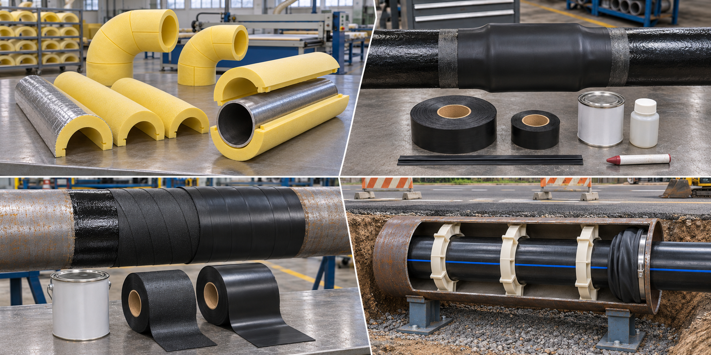

Последний барьер
Теплоизоляция, герметизация, антикоррозия и мехзащита — четыре разные задачи
Скорлупа возвращает теплоизоляцию. Термоусадочный материал закрывает и герметизирует зону. ВУС защищает сталь от коррозии. Футляр принимает механическую нагрузку. Одна позиция не закрывает все четыре задачи.

Что продаётся и чего это не заменяет
| Группа | Применение | Не считать |
|---|---|---|
| Скорлупы ППУ | Сегменты для ремонта/дополнения теплоизоляции на прямых и фасонных участках. | Полным эквивалентом заводской ППУ-трубы без наружного защитного слоя. |
| Термоусадочные материалы | Герметизация, защита стыка, манжеты/ленты по конкретной системе. | Теплоизоляцией или универсальной лентой для любого покрытия. |
| ВУС-труба и ВУС-ленты | Заводское покрытие и полевое восстановление/защита зоны стыка. | Теплоизоляцией. Лента должна быть совместима с базовым покрытием и условиями. |
| Механическая защита | Переходы под дорогами/железными дорогами, вводы, зоны внешней нагрузки. | Антикоррозией, теплоизоляцией или герметизацией рабочей трубы. |
Футляр — это система из двух труб
Для запроса нужны отдельно: диаметр и конструкция рабочей трубы; диаметр, стенка и длина футляра; способ прокладки; центрирующие опоры/кольца; заделка торцов; нагрузки и проектное решение. Внутренний диаметр футляра нельзя выбирать «с запасом на глаз».
Алгоритм для менеджера
- Назвать дефект или внешнее воздействие: потеря тепла, вода, коррозия, грунт/транспортная нагрузка.
- Определить, на каком слое дефект: сталь, теплоизоляция, оболочка, наружная защита.
- Запросить размеры, материалы, фото и проект/технологию ремонта.
- Проверить, нужна ли комбинация слоёв, а не один товар.
Итоговая проверка
Клиент просит скорлупу на повреждённый участок на улице. Чего не хватает?
Нужно выяснить конструкцию трубы, причину и глубину дефекта, диаметры и длину, нужен ли наружный защитный слой и какая технология ремонта утверждена. Скорлупа закрывает только теплоизоляционную часть задачи.
Сверять границы применения и комплектность по карточке изделия в каталоге ТИК.